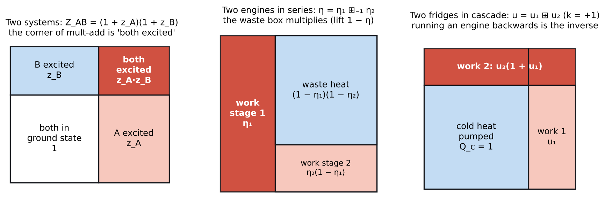
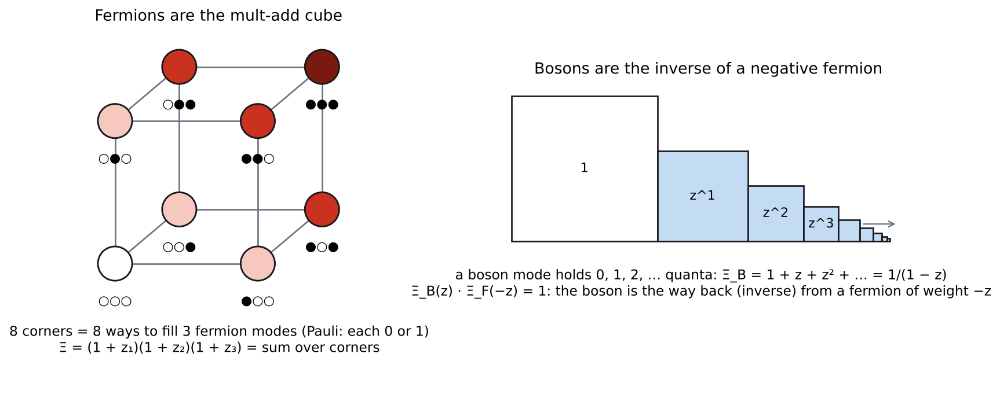
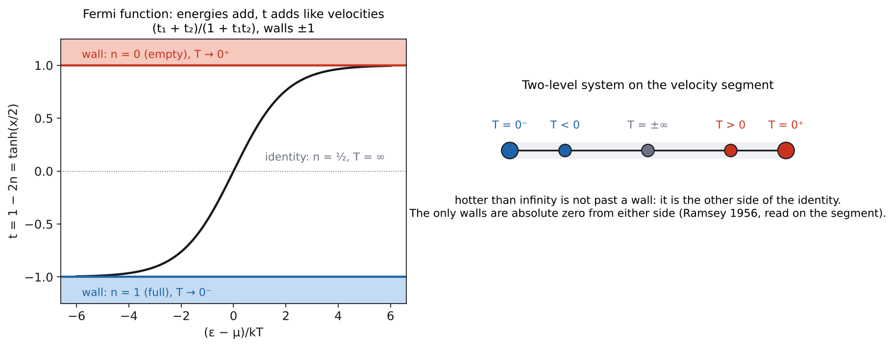
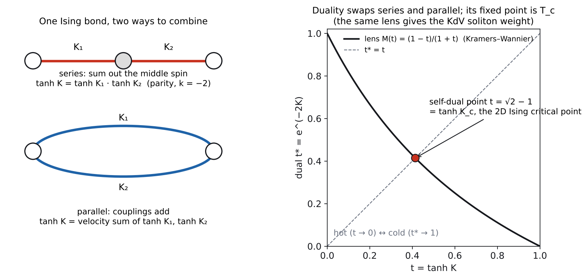
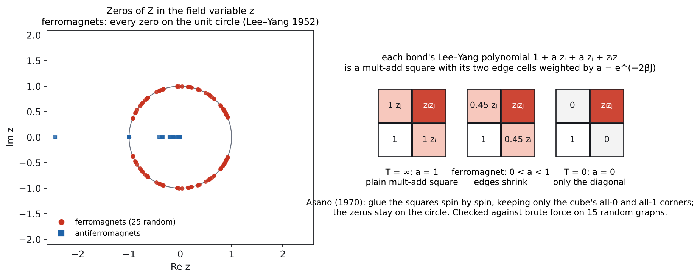
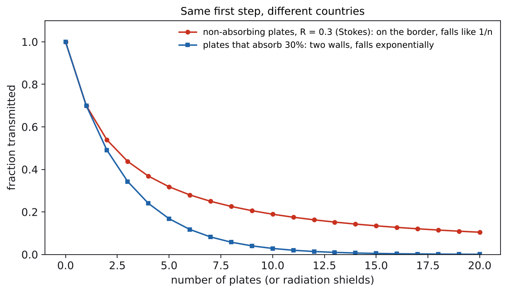

Almost every way thermodynamics combines two things is the circle operation ∘ₖ (called mult-add before 1.0) with a weight: independent systems at k = +1, engines in series at k = −1, entropy and free energy at k = 0, Ising bonds in series at the parity weight −2. Each is known physics. Nothing here beats the solitons as a discovery. The most promising door is Lee–Yang: a proved "all zeros on a circle" theorem whose proof is built from circle-operation squares.
Each point (k, q) is the law (a + b + k·ab)/(1 − q·ab): k is how full the corner cell ab is, q is how much the cube's next layer bends. Grey rings are the laws from earlier pages. Red stations are thermodynamics. Most of it lies on the straight line q = 0, where the circle operation lives. It also reaches the velocity point, the border parabola and the turning country above it.

The geometry is derived, not imposed: count the joint states (left), follow the heat (middle and right), and the circle-operation square falls out.
Measure energies from each ground state, so Z = 1 + z with z the excited weight. For independent systems Z_AB = Z_A·Z_B, so z_AB = z_A ⊞ z_B. The corner z_A·z_B is exactly "both excited". Free energy −kT ln Z is the log of the lift, so it adds, and so does heat capacity. known
As T → 0 every excess z goes to 0, the circle-operation identity, and 0 ⊞ 0 = 0. A degenerate ground state leaves g − 1, which composes as (g₁g₂ − 1) = (g₁ − 1) ⊞ (g₂ − 1). Pauling's ice count W = (3/2)ᴺ is a climb: W − 1 = (½)^(⊞N). Absolute zero is the wall −1. A finite run of cooling steps, each keeping some heat, never lands on it (Lean: unattainable). known, restated The cooling-step model is a simplification of Nernst's real argument.
Run a second engine on the first engine's waste heat. The waste box multiplies, so η = η₁ ⊞₋₁ η₂, the failure-union rule. Carnot fits exactly, η(T_h,T_c) = η(T_h,T_m) ⊞₋₁ η(T_m,T_c), and a perfect stage is the wall. Cascade two fridges and the work per unit of cold heat composes at k = +1. Running an engine backwards is the circle inverse: u = η/(1 − η) = inv(−η). known bookkeeping tidy reading
Curzon–Ahlborn's efficiency at maximum power, 1 − √(T_c/T_h), is half a step of the k = −1 climb: two of them make one Carnot step, η_C = η_CA ⊞₋₁ η_CA. The Otto cycle composes the same way through its compression ratios. And the second law composes: stages under their Carnot bounds give a cascade under the overall bound (Lean: second_law_composes).

Pauli lets each fermion mode be empty or full, so the many-fermion states are the corners of the cube, and the grand partition function is the corner expansion: Ξ = (1 + z₁)⋯(1 + zₙ) = 1 + (z₁ ⊞ ⋯ ⊞ zₙ). A boson mode holds any number, Ξ_B = 1/(1 − z), and its excess z/(1 − z) is the circle inverse of −z. So Ξ_B(z)·Ξ_F(−z) = 1: a boson is a fermion of weight −z run backwards. known (the fermion–boson, or Koszul, duality; checked for 4 modes)
The Fermi function lives between two walls. With t = 1 − 2n = tanh(x/2), adding energies adds t like velocities, (t₁ + t₂)/(1 + t₁t₂), with walls at n = 0 and n = 1. For bosons 1/(1 + 2n) is the same tanh, so 1 + 2n lives outside the walls. known

Negative temperature on the segment: hotter than infinity is not past a wall. It is the other side of the identity. The only walls are absolute zero from either side (Ramsey 1956, read on the velocity segment).
Tsallis entropy composes as S_AB = S_A ⊞ₖ S_B with k = 1 − q, and Rényi entropy is the log of the lift, so it adds. This circle operation with dial k already has a name in that literature: the q-sum, x ⊕_q y = x + y + (1 − q)xy, with its q-logarithm and q-exponential (Nivanen, Le Méhauté and Wang 2003; Borges 2004). So the whole k-line is Tsallis' q-algebra. known
Kaniadakis' relativistic κ-entropy uses the κ-sum x√(1 + κ²y²) + y√(1 + κ²x²), which is sinh addition. It has no corner term, and its next layer bends upward: it osculates the map at (0, κ²/2), in the turning country, the mirror of sine addition at (0, −½). known law placement computed here

Summing out the middle spin of two bonds multiplies tanh K, so the chance p that linked spins disagree composes at k = −2, the parity weight from the information page. Bonds in parallel add K, so tanh K composes by velocity addition. known (decimation; Matsui's piling-up rule is the same algebra)
Kramers–Wannier duality sends tanh K to e^(−2K), which is exactly the velocity lens M(t) = (1 − t)/(1 + t). The lens turns parallel into series, so duality swaps them. Its fixed point t = √2 − 1 is tanh K_c, the critical temperature of the 2D Ising model. The same lens gives the KdV two-soliton weight, √A = M(k₂/k₁). known (Kramers–Wannier 1941; M is the Cayley transform, which is why it turns up in both)

For any ferromagnetic Ising model, every zero of the partition function in the field variable z lies on the unit circle (Lee and Yang 1952). It is a proved "zeros on a line" theorem, often held up as a model for the Riemann hypothesis. Each bond contributes 1 + a·zᵢ + a·zⱼ + zᵢzⱼ with a = e^(−2βJ). At infinite temperature (a = 1) that is the plain circle-operation square (1 + zᵢ)(1 + zⱼ). Cooling shrinks the edge cells, and at T = 0 only the diagonal is left. Asano's proof (1970) glues these squares spin by spin, keeping only the cube's all-0 and all-1 corners. Checked here against brute force on 15 random graphs, and the circle on 40.
A three-spin chain shows it in miniature: Z = 1 + (a ⊞ b)z + (a ⊞ b)z² + z³ = (1 + z)(1 + (m − 1)z + z²) with m = a ⊞ b. Ferromagnetic bonds keep 0 ≤ a ⊞ b ≤ 3, so the quadratic's zeros are on the circle (all proved in Lean: chain3_circ, chain3_disc). Read as a law whose walls are those zeros, a ferromagnet sits in the turning country, and infinite temperature touches the border at (2, 1), the Euler-characteristic cusp. theorem known circle-operation reading new to this project
Stack two non-absorbing glass plates, or face two gray surfaces for radiant heat. Summing every bounce gives R = (R₁ + R₂ − 2R₁R₂)/(1 − R₁R₂) (Stokes 1862; the gray-plate rule 1/ε = 1/ε₁ + 1/ε₂ − 1 is the same law). That is (k, q) = (−2, 1), exactly on the border parabola k² = 4q. Its lens N(R) = R/(1 − R) = 1/ε − 1 turns it into plain addition, with one double wall at R = 1, a perfect mirror.
Being on the border has a visible consequence. n radiation shields cut heat flow as 1/(n + 1), a power law, while absorbing plates, with two walls, fall exponentially. This law wasn't on the map before (the earlier "stacked reflections" point at (0, −1) is the coherent wave version). formula known placement new here

Read a law in units i·a and it moves from (k, q) to (i·k, −q). On the k = 0 axis that flips q: thermal tanh addition at (0, −1), with two walls, becomes quantum tan addition at (0, +1), a turn. Imaginary time trades saturation for oscillation, and the map shows it as a reflection through the straight line. known (Wick 1954) placement restated Fluctuation theorems sit at k = +1 too: for independent processes ⟨e^(−βW)⟩ − 1 combines by the circle operation (Jarzynski 1997), and coupled reactions multiply equilibrium constants (Hess).
Status: known standard physics restated; tidy reading a known fact read in circle-operation terms; new here new to the literature as far as I found. The Lean column names theorems in lean/ThermoFused.lean.
| Law | Form | (k, q) | Status | Lean |
|---|
Not placed: how temperature transforms under a boost is still argued (Planck–Einstein T/γ, Ott γT, Landsberg invariant), so it is left off the map as unsettled.
All in math-theory/thermodynamics/ in the project folder.
lean/ThermoFused.lean: 68 theorems, core Lean 4.37.0-rc1, no sorry, phrased through the library's the circle operation (import FusedAlgebra.Base). Not compiled yet: Lean isn't installed where this was written. The shared library's build can compile it as a new topic. Real exp, log and square roots enter as abstract quantities with the one property each proof needs.checks.py: 55 checks pass, exact sympy algebra plus numerics: brute-force state sums, ray-by-ray bounce sums, transfer-matrix decimation, Lee–Yang zeros and Asano gluing (checks_output.txt).lean_identities.py: every ring and field identity in the Lean file, checked symbolically: 25 / 25.figures.py, figures/: the pictures.Sources: Lee and Yang, Phys. Rev. 1952; Asano, J. Phys. Soc. Japan 1970; Kramers and Wannier, Phys. Rev. 1941; Stokes, Proc. Roy. Soc. 1862; Curzon and Ahlborn, Am. J. Phys. 1975; Tsallis, J. Stat. Phys. 1988; Nivanen, Le Méhauté and Wang, Rep. Math. Phys. 2003; Borges, Physica A 2004; Kaniadakis, Phys. Rev. E 2002; Ramsey, Phys. Rev. 1956; Jarzynski, Phys. Rev. Lett. 1997; Pauling, JACS 1935; Landauer, IBM J. 1961; Wick, Phys. Rev. 1954.